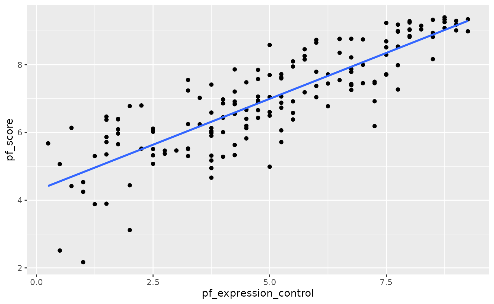
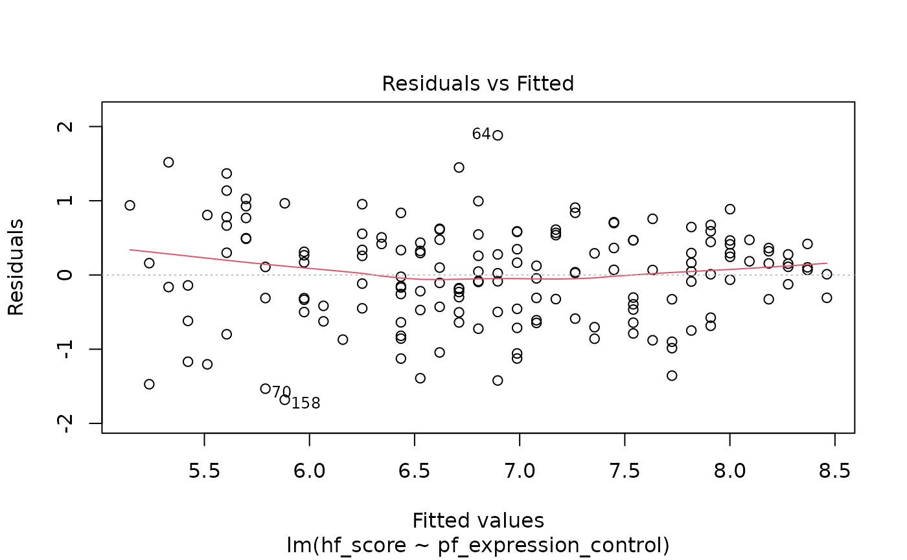

library(tidyverse)
#> ── Attaching packages ─────────────────────────────────────── tidyverse 1.3.1 ──
#> ✔ ggplot2 3.3.5 ✔ purrr 0.3.4
#> ✔ tibble 3.1.6 ✔ dplyr 1.0.8
#> ✔ tidyr 1.2.0 ✔ stringr 1.4.0
#> ✔ readr 2.1.2 ✔ forcats 0.5.1
#> ── Conflicts ────────────────────────────────────────── tidyverse_conflicts() ──
#> ✖ dplyr::filter() masks stats::filter()
#> ✖ dplyr::lag() masks stats::lag()
library(broom)
library(openintro)
#> Loading required package: airports
#> Loading required package: cherryblossom
#> Loading required package: usdataExercise
Check whether there is a difference in the performance at baseline (
ohs0) between the males and females. Study the distributions and decide which test to use.We used an ANOVA to study the distribution of satisfaction.cat and age. Check the distribution of age over the 3 satisfaction.cat groups. Does it pass normality assumptions? If you are unsure, use Kruskal-Wallis test. Hint you can get information using
?kruskal.test.Use ANOVA or Kruskal-Wallis test to check if there is an association between baseline ohs0 and satisfaction.cat groups.
Create a table of retired against satisfaction groups. Does the chi-square test show an association between the two?
hip<-read.csv("../inst/extdata/hip_data.csv")
hip %>% filter(!is.na(sex)) %>% ggplot(aes(ohs0, fill=sex)) + facet_grid(~sex) + geom_histogram()
#> `stat_bin()` using `bins = 30`. Pick better value with `binwidth`.
w<-wilcox.test(ohs0~sex,data=hip %>% filter(!is.na(sex)))
w
#>
#> Wilcoxon rank sum test with continuity correction
#>
#> data: ohs0 by sex
#> W = 48057, p-value = 2.962e-05
#> alternative hypothesis: true location shift is not equal to 0
hip<-hip %>% mutate(satisfaction.cat=factor(ifelse(satisfaction<80,"Low",ifelse(between(satisfaction,80,90),"Medium","High")), levels=c("Low","Medium","High")))
hip %>% filter(!is.na(satisfaction.cat)) %>% ggplot(aes(age, fill=satisfaction.cat)) + facet_grid(~satisfaction.cat) + geom_histogram()
#> `stat_bin()` using `bins = 30`. Pick better value with `binwidth`.
kr <- hip %>% filter(!is.na(satisfaction.cat)) %>%
kruskal.test(age~satisfaction.cat, data=. )
table(hip$retired, hip$satisfaction.cat)
#>
#> Low Medium High
#> 0 10 28 61
#> 1 17 35 80
chisq.test(hip$retired, hip$satisfaction.cat)
#>
#> Pearson's Chi-squared test
#>
#> data: hip$retired and hip$satisfaction.cat
#> X-squared = 0.44773, df = 2, p-value = 0.79941. Fit a new model that uses pf_expression_control to predict hf_score, or the total human freedom score. What does the slope tell us in the context of the relationship between human freedom and the amount of political pressure on media content?
2. How does this relationship compare to the relationship between pf_score and pf_expression_control? Use the \(R^2\) values from the two model summaries to compare. Does your pf_expression_control seem to predict hf_score better? Why or why not?
3. Check the model diagnostics using appropriate visualisations and evaluate if the model conditions have been met.
4. Pick another pair of variables of interest and visualise the relationship between them. Do you find the relationship surprising or is it what you expected. Discuss why you were interested in these variables and why you were/were not surprised by the relationship you observed.
hfi_2016 <- hfi %>%
filter(year == 2016)
m1 <- lm(hf_score ~ pf_expression_control, data = hfi_2016)
summary(m1)
#>
#> Call:
#> lm(formula = hf_score ~ pf_expression_control, data = hfi_2016)
#>
#> Residuals:
#> Min 1Q Median 3Q Max
#> -1.68164 -0.45467 0.05692 0.46699 1.88128
#>
#> Coefficients:
#> Estimate Std. Error t value Pr(>|t|)
#> (Intercept) 5.05340 0.12293 41.11 <2e-16 ***
#> pf_expression_control 0.36843 0.02236 16.48 <2e-16 ***
#> ---
#> Signif. codes: 0 '***' 0.001 '**' 0.01 '*' 0.05 '.' 0.1 ' ' 1
#>
#> Residual standard error: 0.6595 on 160 degrees of freedom
#> Multiple R-squared: 0.6291, Adjusted R-squared: 0.6268
#> F-statistic: 271.4 on 1 and 160 DF, p-value: < 2.2e-16
plot(m1)
ggplot(data = hfi_2016, aes(x = pf_expression_control, y = hf_score)) +
geom_point() +
geom_smooth(method = "lm", se = FALSE)
#> `geom_smooth()` using formula 'y ~ x'EXERCISES
1. Add region to the model from Q1 using lm(hf_score ~ pf_expression_control + region, data = hfi_2016). What do you notice about the slope between human freedom and expression control? How has it changed from the previous model. Do you think region is a confounder, and think about reasons why this might be so?
2. Compare the \(R^2\) for the 2 models from Q1 and the previous questions. Is there an increase by adding region? Think about the definition of \(R^2\). What does this mean in this context?
3. Fit a new model that uses ef_money or monetary measure to predict hf_score. What does the slope tell us in the context of the relationship between human freedom and the economy in the country?
4. Again add region to the model from Q3. Compare the slope and \(R^2\) with the model from Q3.
6. Finally fit a model with ef_money and pf_expression_control as exposures and hf_score as outcome. Compare the slope and \(R^2\) from the models from the previous exercises. Could ef_money be a confounder?
7. Use a linear regression model (and scatter plot) with ef_money as exposure and pf_expression_control as outcome, to study whether ef_money has an association with pf_expression_control as well. This might validate our finding that ef_money is a confounder between pf_expression_control as exposure and hf_score as outcome from Q6.
tidy(m1)
#> # A tibble: 2 × 5
#> term estimate std.error statistic p.value
#> <chr> <dbl> <dbl> <dbl> <dbl>
#> 1 (Intercept) 5.05 0.123 41.1 5.97e-87
#> 2 pf_expression_control 0.368 0.0224 16.5 2.73e-36
m2 <- lm(hf_score ~ pf_expression_control + region, data = hfi_2016)
summary(m1)
#>
#> Call:
#> lm(formula = hf_score ~ pf_expression_control, data = hfi_2016)
#>
#> Residuals:
#> Min 1Q Median 3Q Max
#> -1.68164 -0.45467 0.05692 0.46699 1.88128
#>
#> Coefficients:
#> Estimate Std. Error t value Pr(>|t|)
#> (Intercept) 5.05340 0.12293 41.11 <2e-16 ***
#> pf_expression_control 0.36843 0.02236 16.48 <2e-16 ***
#> ---
#> Signif. codes: 0 '***' 0.001 '**' 0.01 '*' 0.05 '.' 0.1 ' ' 1
#>
#> Residual standard error: 0.6595 on 160 degrees of freedom
#> Multiple R-squared: 0.6291, Adjusted R-squared: 0.6268
#> F-statistic: 271.4 on 1 and 160 DF, p-value: < 2.2e-16
summary(m2)
#>
#> Call:
#> lm(formula = hf_score ~ pf_expression_control + region, data = hfi_2016)
#>
#> Residuals:
#> Min 1Q Median 3Q Max
#> -1.9030 -0.2887 0.0179 0.2704 1.6497
#>
#> Coefficients:
#> Estimate Std. Error t value Pr(>|t|)
#> (Intercept) 6.05229 0.23549 25.701 < 2e-16 ***
#> pf_expression_control 0.27471 0.02585 10.627 < 2e-16 ***
#> regionEast Asia 0.24054 0.32845 0.732 0.465094
#> regionEastern Europe -0.10177 0.26736 -0.381 0.703991
#> regionLatin America & the Caribbean -0.56663 0.25987 -2.180 0.030771 *
#> regionMiddle East & North Africa -1.05998 0.25870 -4.097 6.8e-05 ***
#> regionNorth America 0.33030 0.46915 0.704 0.482498
#> regionOceania -0.13131 0.37504 -0.350 0.726741
#> regionSouth Asia -0.62691 0.26403 -2.374 0.018833 *
#> regionSub-Saharan Africa -0.97208 0.24500 -3.968 0.000112 ***
#> regionWestern Europe 0.04867 0.29823 0.163 0.870570
#> ---
#> Signif. codes: 0 '***' 0.001 '**' 0.01 '*' 0.05 '.' 0.1 ' ' 1
#>
#> Residual standard error: 0.5524 on 151 degrees of freedom
#> Multiple R-squared: 0.7545, Adjusted R-squared: 0.7382
#> F-statistic: 46.41 on 10 and 151 DF, p-value: < 2.2e-16
m3 <- lm(ef_money ~ pf_expression_control, data = hfi_2016)
m4 <- lm(ef_money ~ pf_expression_control + region, data = hfi_2016)
m4 <- lm(hf_score ~ pf_expression_control + ef_money, data = hfi_2016)
ggplot(data = hfi_2016, aes(x = ef_money, y = pf_expression_control)) +
geom_point() +
geom_smooth(method = "lm", se = FALSE)
#> `geom_smooth()` using formula 'y ~ x'
m5 <- lm(pf_expression_control ~ ef_money, data = hfi_2016)